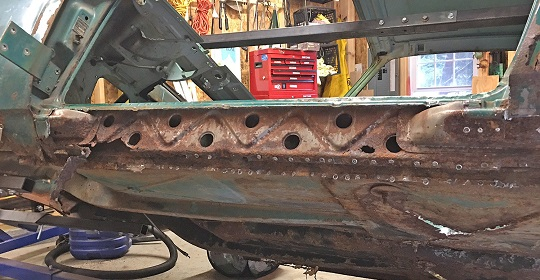
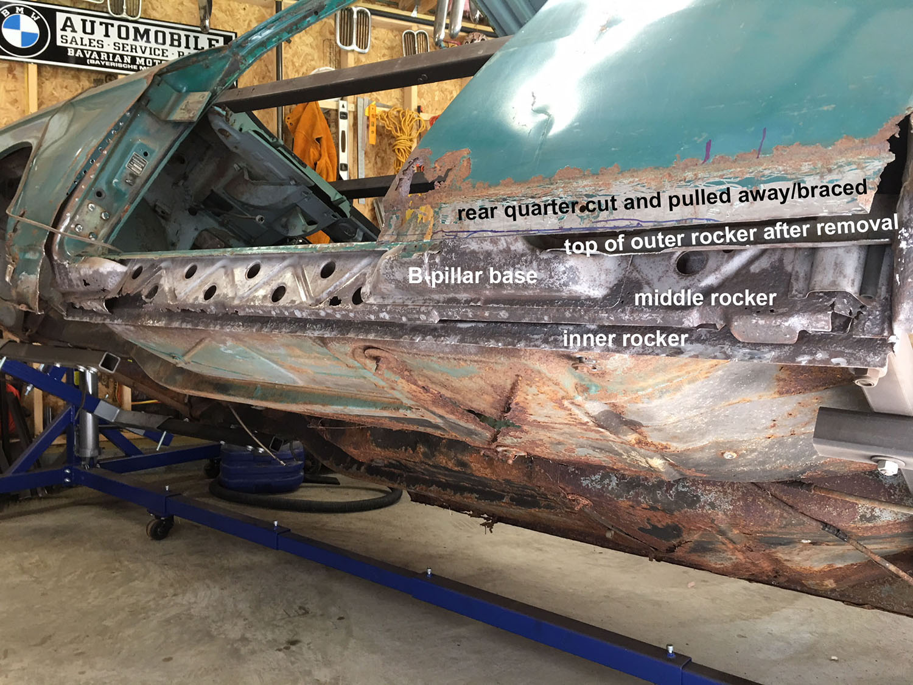
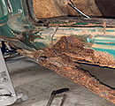
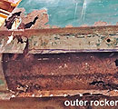
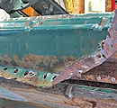
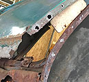
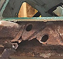
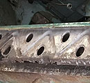

September 2017 - Rocker Removal (Driver's Side)
I almost want to title this "where the sh-- gets real". The BMW e9/e120 (2000c/cs) body is like an onion whereby one must peel back the layers to find out what is REALLY going on underneath. An “interesting” aspect about the car is that it seems to rust from the inside out normally due to window/windshield gasket drainage issues with water settling inside hidden body cavities. Compounding this problem, Karmann in Osnabrück did not coat the inner metal panels with any type of rust preventative treatment, but instead used at best a light coat of paint. They relied on clever little drain ports at the base of the rockers to allow any water to run out. Alas, over the years, these cars were victims of idiot mechanics jacking the car up on the drain port, crushing it shut. That and inattentive ownership allowing rubber window gaskets to deteriorate exacerbating hidden leaks and you have a recipe for disaster. If you see a little rust on the outside, you’re guaranteed to see 10x as much underneath.
Rockers
There are 3 rockers or sills. The outer, middle and inner. Covering the outer rocker is stainless/chrome trim (jokingly noted as holding the rusted rockers together). Yet, at the rear quarter of the car, you will find the rear quarter sheet metal actually overlapping the outer rocker. In this one section of the body there are in essence 5 layers (trim, quarter panel, outer rocker, middle rocker, and inner rocker). Actually if one includes the “A” and “B” pillar bases (which conceal the inner rocker), you have 6 layers to peel back! The inner rocker seems to get the worst of it existing in a cavernous hidden channel with water flowing in a settling over the years. This is problematic because the “A” and “B” pillar support bases are welded into the middle rocker for major structural support. It carries a lot of weight and responsibility. The middle rockers usually rust out and separates at these locations due to the pillar compartments holding extra drainage. 
Removing the Stainless Rocker Trim

The stainless steel rocker covers includes two pieces secured by roughly 20 plus sheet metal screws. The covers are highly polished and attractive almost looking chrome-like. The ones on this 66 2000c are in very good shape considering the age. When I first bought the car, I held out great hope that the rockers were not too bad. Of course, I could not really evaluate the rockers because the trim fully covers them. When I attempted to remove the trim, I was confronted by many corroded and rusted “round headed” sheet metal screws. I had to take great care using a cut off tool to break the screws free. When I finally loosen up and the top section, a pile of rust and chunks of car fall out. After I remove the trim covers, completely more chunks of rusted metal fall out. I mean A LOT of rusted chunks of what was the outer and middle rocker metal, as well as some of the A & B pillar bases.
Removing the Outer Rocker

With the trim removed, I can see some serious rust as well as gaping holes on the outer rocker. The rear quarter panel bottom as well as the front fender bottom both of which show serious rust conceal the outer rocker and will have to be cut away. Rule of thumb, if you see rust at this level, it will be 10 times worse within. With guidance from my friend Tom, I cut the rear quarter midway along the rocker width. This process reveals the poor design having a panel tightly overlay another panel in an area prone to water seepage. This is evidence by the severe rust for the now exposed section of the outer rocker.

I drill out dozens of spot welds using a special bit where the outer rocker is welded to both the middle and inner rockers. This can be time consuming and sometimes very difficult due to rust. I have a special welded seam breaking tool to use with a hammer as needed. This is some nasty work. I also employ the cut off tool where necessary taking care not to cut in the wrong locations. There are hollow spaces and there are points where the outer rocker joins to the middle and inner rockers and the pillar bases.

I also drill out the spot welds that attach the rear and front fender to the rear wheel arch, and the door jams. This is so I can gently pull the sheet metal away enough to block with 2x4s without damaging or stretching the metal to actually see the rocker upper sections and the pillar supports in their entirety. I cut away the rocker in very specified areas leaving the upper portions in place up inside the rear quarter area as well as running along the door base. I will actually weld my new rocker on to these existing sections. Serious shops take these cars completely apart and actually replace the entire sections. This takes expert skill and proper bracing to maintain the symetry of the car. This car is salvagable by welding new sections into the existing. As long as the structural support is made whole, you are fine.
Middle Rocker Revealed and Media Blasting

With the outer rocker removed, and the fender and quarter panels freed up and blocked, I can fully see the middle rocker. It is seriously rusted and some places missing. Even more concerning, sections of the A-pillar have rusted away. This is where you can see how important the middle rocker is to the structural support of these cars.
The middle rocker almost acts like the “backbone” for the car, especially due to the lack of a real B-pillar. With the middle rocker’s deterioration, one runs the risk of the car bowing leading to the doors not fitting correctly. The pillar bases are equally vital, tie into the middle rocker, and provide the vertical support for the body. 
This is the reason I welded in braces spanning the door lengths prior to embarking on this process fully anticipating that I would deminish the rocker rigidity in the replacement process.
At his point I media blast the exposed areas using "Black Diamond" type ground charcoal and a entry level media blaster.
{kind=link}
{kind=link}
{kind=link}
{kind=link}
{kind=link}
{kind=link}
{kind=link}